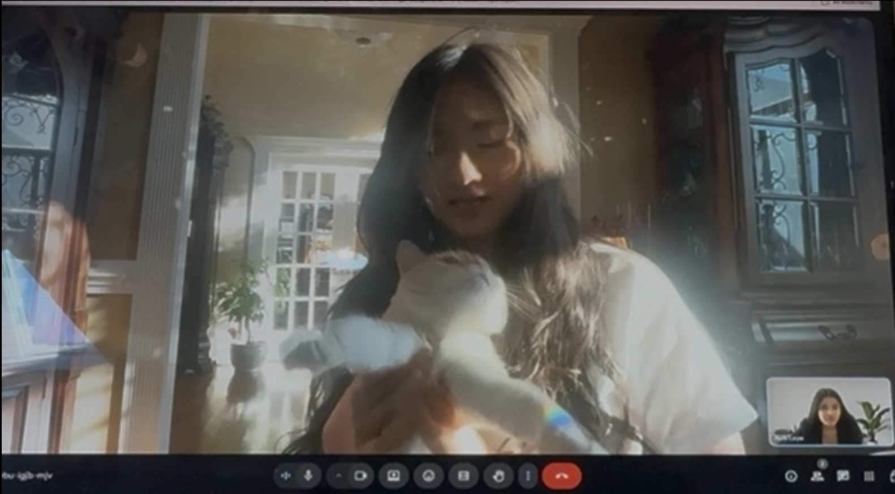

REMaura is shaped by real data, lived experience, and expert feedback — from the signals we study to the moments we’re trying to protect.
We evaluated REMaura using the PhysioNet Sleep-CAP Database — EEG recordings from 108 participants, 92 with diagnosed sleep disorders, including five with narcolepsy. The database's Cyclic Alternating Pattern (CAP) annotations mark sleep instability through abrupt EEG shifts that closely resemble microsleep onset. After aligning our detection parameters to these CAP features, we tested the algorithm against EEG data from all five narcolepsy patients and sixteen healthy participants — REMaura flagged microsleep events in every narcolepsy case and produced zero false positives among healthy controls. In a follow-up one-hour real-user pilot, REMaura detected neurological deviations 2.2 to 2.7 seconds before microsleep onset — enough lead time to intervene before it happens.
Based on 212 survey responses from people living with narcolepsy and sleep disorders.

We sat down with about ten people living with narcolepsy to understand what microsleeps actually feel like day to day — and what a safety device would need to get right to earn their trust.
As an anxious new mom, I would 100% have bought something like this for those late-night feedings where I was worried about falling asleep with my baby in my arms, regardless of my own sleep disorder.
Microsleep has probably been one of the biggest challenges I've faced — my eyes are open, people see me interacting with them, and they just assume I'm fully alert. Hearing about a device like this, I was super excited, because that's exactly what I struggle with.
I got diagnosed at 18, and my whole life was affected — socially, mentally, academically, all of it. It's horrible. I've fallen asleep while driving, and I've even lost a job over it.
We consulted with Dr. Carlos Sendon at VCU to help us identify challenges in our approach, refine the idea, and think through practical next steps. His feedback helped us pressure-test the concept beyond the dataset and sharpen where REMaura should go next.